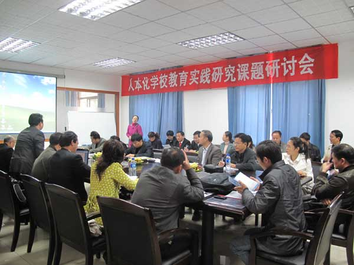

关于我们 | 新闻动态 | 作译者服务 | 读者服务 | 馆配服务 | 经销商服务
2009年11月5日-6日，由我公司与湖北省教研 室共同举办的“中小学生厌学问题暨人本化学校教育实研讨会”在公司二楼会议室举行。湖北省内30多所中小学校长及相关负责人、公司相关编辑人员参加了会议。研讨会上各位代表集中研讨了和谐社会建设背景下教育过程层面的学生个体之间的均衡发展问题，特别是学生厌学问题及其与全社会高质量教育期望所形成的巨大反差和教改对策问题。认真讨论了中小学生厌学问题课题的研究假设、核心概念界定、主要研究内容的设计、研究内容与方法的创新点、技术路线、实施步骤、最终成 果表达形式和研究任务分工。会议决定根据最终研究成果编写一套《人本化学校教育实践研究丛书》，该套丛书将对中小学生的厌学问题做出客观真实的分析和判断，对当前中小学教育的人本化问题起到积极的指导作用。
